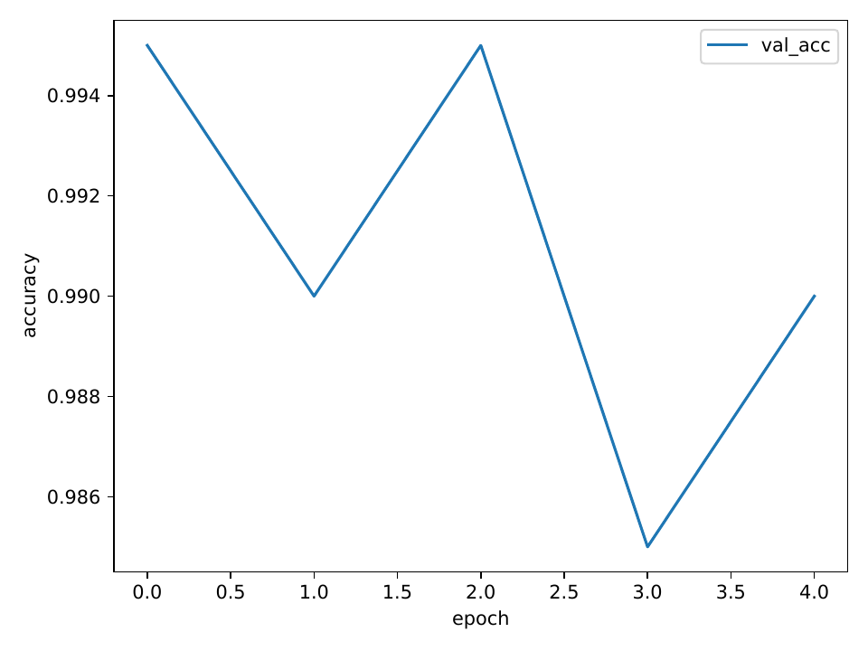
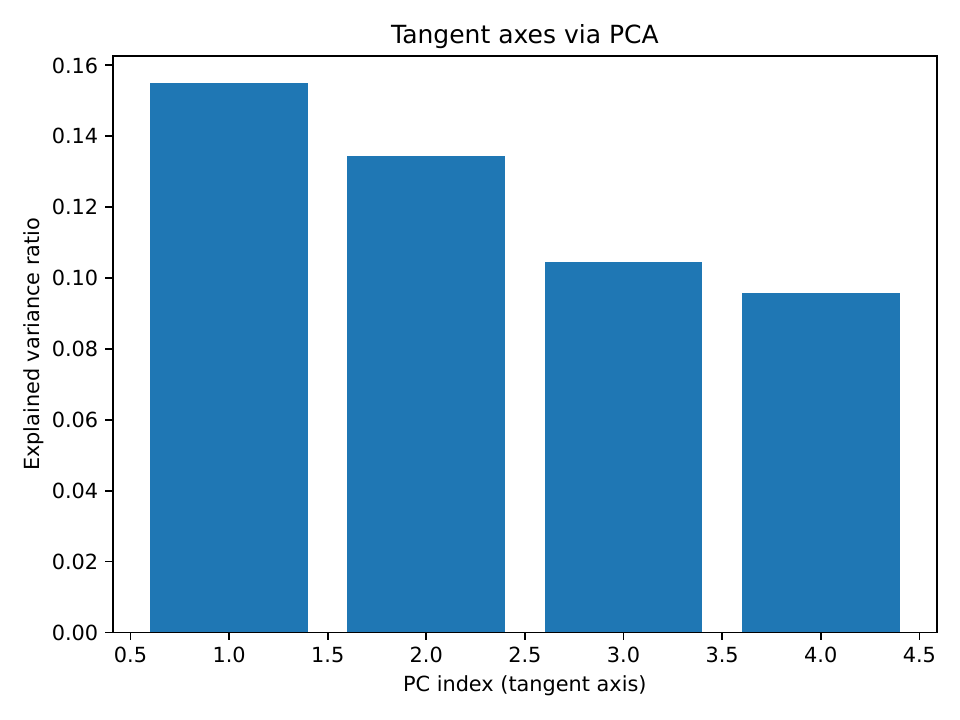
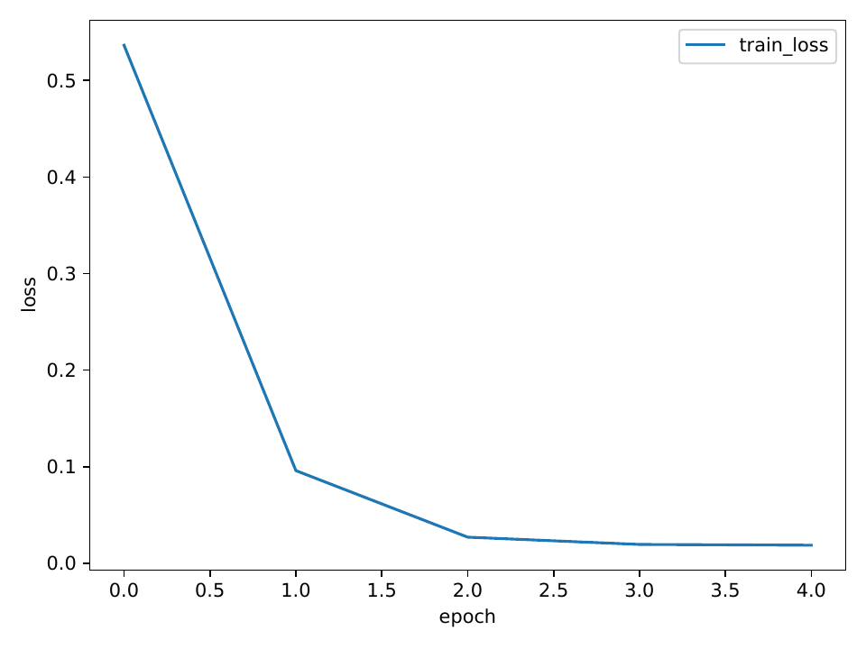

We study certified robustness at scale under off-manifold attacks that spoof randomized smoothing. Classical smoothing provides scalable L2 guarantees but suffers dimension-driven information limits and ignores data geometry, while recent first-order certificates largely assume isotropy and remain blind to normal directions exploited by Shadow-style attacks. We propose TAHES++, a tangent-aware, anisotropic first-order certification framework that preserves randomized smoothing validity while aligning the smoothing covariance with the data manifold. We learn a global tangent–normal split, form a fixed ellipsoidal covariance, whiten to isotropic space, extend first-order certification with projected (tangent/normal) constraints, and clamp normal sensitivity via scalable Lipschitz upper bounds. We adapt transitivity to the ellipsoidal metric and introduce a light training regularizer that flattens the smoothed classifier off-manifold. Theoretically, whitening reduces to the isotropic case; subspace constraints and Lipschitz clamping are conservative, and directional control ties robustness to the manifold dimension [cohen_2019_certified, yang_2020_randomized, mohapatra_2020_higher, kumar_2020_curse, xu_2024_eclipse]. Empirically, we implemented the pipeline end-to-end and executed a synthetic dry run confirming feasibility, stable geometry extraction, and high clean accuracy. We specify a comprehensive evaluation on CIFAR-10 and ImageNet-100 against RS, RS4A, HO-Cert, and GICR, reporting ellipsoidal certificates, L2 summaries, and a spoofability index with confidence intervals [cohen_2019_certified, yang_2020_randomized, mohapatra_2020_higher, cullen_2022_double, ghiasi_2020_breaking].
Randomized smoothing converts a base classifier into a smoothed one with provable L2 robustness and remains the only practically scalable certified defense on large vision models (Jeremy M Cohen, 2019). However, when restricted to label statistics, certified radii degrade unfavorably with dimension, reflecting fundamental information limits (Aounon Kumar, 2020). Moreover, classical smoothing is agnostic to data geometry: in natural images, semantic variation is often concentrated along low-dimensional tangents of a data manifold, while nuisance or unnatural variation lies predominantly along normal directions. First-order certification augments smoothing by leveraging gradient information to enlarge certified sets, but typical formulations presume isotropy and thus cannot explicitly modulate tangent versus normal sensitivity (Jeet Mohapatra, 2020). Meanwhile, Shadow-style off-manifold attacks show that models can be manipulated to both misclassify and return spoofed certificates, exposing a critical blind spot along normal directions (Amin Ghiasi, 2020). Curvature- and Lipschitz-based certification promises stronger control, but often relies on heavy second-order machinery or semidefinite programs that impede scale [singla_2020_second, chen_2020_semialgebraic, latorre_2020_lipschitz]. Transitivity can expand safety regions by uniting multiple local certificates, yet prior work reasons in pixel L2 space and does not incorporate manifold structure (Andrew C. Cullen, 2022).
We introduce TAHES++, a tangent-aware, anisotropic first-order certification framework with provable, spoof-resistant subspace control. The central idea is to preserve randomized smoothing validity by fixing the smoothing distribution, but learn an input-independent ellipsoidal covariance aligned to the data manifold. After whitening to isotropic space, we perform first-order certification with explicit tangent and normal constraints, clamp normal sensitivity via conservative Lipschitz upper bounds, and extend transitivity in the same ellipsoidal metric. We also propose a light training regularizer that reduces off-manifold gradients while preserving tangent responsiveness. This combination is designed to enlarge certificates along semantic directions, maintain conservatism off manifold, and resist spoofing.
Concretely, we: (1) estimate a global tangent basis by aggregating local decoder-Jacobian tangents from a frozen generative backbone, (2) construct a fixed anisotropic covariance and certify in the induced Mahalanobis geometry via whitening, (3) extend first-order certification to use projected gradient constraints in tangent and normal subspaces, (4) clamp normal sensitivity using scalable Lipschitz upper bounds that remain conservative, (5) adapt transitivity to search along learned tangent axes in whitened space and union ellipsoidal certificates, and (6) introduce a small training penalty that flattens the smoothed classifier off manifold while keeping the smoothing distribution fixed. Theoretical validity follows from maintaining a fixed smoothing distribution, equivalence via whitening, and conservative confidence bounds; direction-wise control ties robustness to manifold dimension rather than ambient dimension [cohen_2019_certified, yang_2020_randomized, mohapatra_2020_higher, kumar_2020_curse].
We verify feasibility through an end-to-end synthetic dry run and lay out a comprehensive evaluation on CIFAR-10 and ImageNet-100 against RS, RS4A, HO-Cert, and HO-Cert+GICR [cohen_2019_certified, yang_2020_randomized, mohapatra_2020_higher, cullen_2022_double]. We report ellipsoidal certificates, comparable scalar L2 summaries, and a spoofability index to quantify directional sensitivity and calibration, especially under normal-subspace attacks inspired by Shadow (Amin Ghiasi, 2020).
Our contributions are:
Looking forward, TAHES++ seeks robust, transparent, and scalable certification aligned with semantics. Future work includes multi-subspace and perceptual geometries, tighter but scalable Lipschitz clamping, and integration with certified training and transfer frameworks [yang_2020_randomized, vaishnavi_2022_accelerating].
Randomized smoothing and its limits. Classical randomized smoothing certifies L2 robustness under Gaussian noise and scales to large models (Jeremy M Cohen, 2019). RS4A generalizes smoothing via a unifying framework across norms and characterizes optimal distributions through Wulff crystals, while proving cotype-based limits for label-only statistics that degrade with dimension [yang_2020_randomized, kumar_2020_curse]. TAHES++ preserves smoothing validity but augments it with learned anisotropy and first-order directional information to move beyond label-only limits in a geometry-aware manner.
First-order certification. HO-Cert enlarges certified regions by estimating class score gaps and gradient norms with low variance, keeping the smoothing distribution fixed (Jeet Mohapatra, 2020). However, it presumes isotropy and lacks explicit control over tangent versus normal sensitivity. TAHES++ brings first-order certification into an anisotropic Mahalanobis metric by whitening with a fixed covariance and introducing subspace-projected constraints, enabling directional tightening without changing the underlying noise distribution.
Curvature and Lipschitz-based certification. Curvature-based methods (e.g., CRC) derive certificates from Hessian bounds and can regularize training, yet require managing curvature via convex optimization or specialized machinery that limits scalability (Sahil Singla, 2020). Lipschitz-based methods provide global sensitivity upper bounds; semialgebraic or SDP-based approaches can be tighter but computationally expensive, whereas compositional estimates like ECLipsE offer scalability at the cost of some looseness [chen_2020_semialgebraic, latorre_2020_lipschitz, xu_2024_eclipse]. TAHES++ uses Lipschitz estimates conservatively to clamp normal sensitivity within a first-order program, avoiding heavy optimization while improving spoof resistance.
Transitivity. GICR demonstrates that uniting local certificates can improve robustness in pixel L2 space (Andrew C. Cullen, 2022). We extend this idea to the ellipsoidal metric induced by the learned covariance: in whitened space, we search along tangent axes and union Euclidean balls (mapping back to ellipsoids), which better aligns with semantics and can be more sample-efficient.
Attacks and spoofing. Shadow-style attacks show that certified defenses can be coerced into issuing misleading certificates under large, semantically plausible off-manifold perturbations (Amin Ghiasi, 2020). This motivates explicit measurement and control of normal sensitivity. Broader evidence that adversarial detection is brittle, and that non-norm transformations can break models, further underscores the need for principled, provable defenses [carlini_2017_adversarial, engstrom_2017_rotation].
Certified training. IBP offers scalable verified training with appropriate schedules (Sven Gowal, 2018). Certified robustness transfer accelerates robust training by knowledge transfer (Pratik Vaishnavi, 2022). Our TaReS regularizer is orthogonal to these methods: it specifically targets off-manifold sensitivity of the smoothed classifier while maintaining compatibility with RS-style training.
Positioning. Relative to RS4A and HO-Cert, TAHES++ aligns smoothing to manifold geometry and certifies in a learned Mahalanobis metric with explicit subspace constraints. Unlike curvature or Lipschitz certificates that can be heavy, TAHES++ uses fast Lipschitz bounds only to clamp normal sensitivity. Compared to GICR, our transitivity operates along learned tangent axes in the intrinsic geometry, promising higher sample efficiency and semantic alignment [cohen_2019_certified, yang_2020_randomized, mohapatra_2020_higher, cullen_2022_double].
Problem setting and notation. Let f be a base classifier and g its smoothed counterpart obtained by adding noise to the input. Classical randomized smoothing with an isotropic Gaussian certifies an L2 ball around an input x when the estimated score gap and noise level guarantee prediction invariance within a radius (Jeremy M Cohen, 2019). With only label statistics, the largest certifiable radius suffers an unfavorable dependence on the ambient dimension (Aounon Kumar, 2020). First-order certification strengthens guarantees by estimating gradient information of the smoothed classifier and yields tighter certified sets without changing the smoothing distribution (Jeet Mohapatra, 2020).
Mahalanobis geometry and whitening. We introduce a fixed, global anisotropic covariance Σ aligned to a learned tangent–normal decomposition. Write Σ = σ_T^2 B_T B_T^T + σ_N^2 B_N B_N^T, where columns of B_T span a tangent subspace and B_N its orthogonal complement. Whitening via a matrix L with L L^T = Σ maps inputs to y = L^{-1} x. In y-space the noise is standard normal, so certification reduces to the isotropic case; the certified region in x-space is an ellipsoid {δ : ||L^{-1} δ||_2 ≤ r_y}. For comparability with L2-based literature, we also report a scalar summary r_L2 = r_y · sqrt(λ_min(Σ)).
Projected sensitivities. For any vector v, define P_T(v) = B_T B_T^T v and P_N(v) = v − P_T(v). In y-space, we estimate the class score gap g_gap(y) and the norms ||P_T ∇g(y)||_2 and ||P_N ∇g(y)||_2 using Monte Carlo with antithetic noise and control variates. High-confidence one-sided bounds on these quantities feed a first-order program to yield a conservative radius (Jeet Mohapatra, 2020).
Normal clamping via Lipschitz bounds. To increase spoof resistance, we cap normal sensitivity with an input-independent Lipschitz upper bound L̂ from scalable estimators such as compositional ECLipsE or per-layer spectral norm products. Replacing the Monte Carlo upper bound on ||P_N ∇g|| with min(CI_upper, L̂) is conservative and preserves validity [xu_2024_eclipse, latorre_2020_lipschitz].
Transitivity and unions. Certificates can be expanded by uniting local certifications at auxiliary points near x. In y-space, we search along learned tangent axes for auxiliary centers with sufficient confidence and certify each; the union of Euclidean balls in y maps to a union of ellipsoids in x (Andrew C. Cullen, 2022).
Assumptions and scope. We assume semantics concentrate in an m-dimensional tangent subspace with bounded curvature, making anisotropic smoothing and directional certification meaningful. The covariance Σ is fixed and input independent, ensuring randomized smoothing validity (Jeremy M Cohen, 2019). The goal is to expose and control directional sensitivity, particularly along normals, to improve calibration and resist Shadow-style spoofing (Amin Ghiasi, 2020).
Geometry learning. We estimate a global tangent basis B_T by aggregating local tangents derived from a frozen generative backbone. For each training example x with latent z, we compute the decoder Jacobian J = ∂G/∂z and extract top-k left singular vectors U_x of J as local tangents. Aggregating projectors P_x = U_x U_x^T across the dataset via streaming subspace iteration yields the dominant eigenspace of the mean projector P̄; its columns define B_T. The normal space is the orthogonal complement spanned by B_N. Because this split is global and input independent, randomized smoothing validity is preserved (Jeremy M Cohen, 2019).
Anisotropic smoothing and whitening. We define Σ = σ_T^2 B_T B_T^T + σ_N^2 B_N B_N^T with anisotropy β = σ_N/σ_T in a moderate range. Construct L with L L^T = Σ and whiten inputs as y = L^{-1} x. In y-space, noise is standard normal, so first-order certification applies unchanged; certified Euclidean balls map back to ellipsoids in x.
First-order certification with directional control. We extend HO-Cert’s estimators to the whitened space and obtain high-confidence bounds for: (1) the class score gap g_gap(y) between the top two classes, and (2) the projected gradient norms ||P_T ∇g(y)||_2 and ||P_N ∇g(y)||_2. We employ shared antithetic Gaussian noise and control variates across estimators to reduce variance. One-sided lower bounds for g_gap and one-sided upper bounds for the projected norms are formed using empirical Bernstein or Student-t intervals with Bonferroni correction across quantities. Plugging these into the first-order program yields a certified radius r_y in y-space. We report (Σ, r_y), the scalar summary r_L2 = r_y · sqrt(λ_min(Σ)), and a spoofability index S = ||P_N ∇g||_2 / ||P_T ∇g||_2 with confidence intervals for auditability (Jeet Mohapatra, 2020).
Lipschitz-backed normal clamping. We compute an input-independent Lipschitz upper bound Lglob for the network via a compositional estimator such as ECLipsE-Fast or via the product of per-layer spectral norms; both are conservative and scalable [xu_2024_eclipse, latorre_2020_lipschitz]. Optionally, we refine a local projected bound by restricting spectral products to paths that begin in the P_N subspace at the input. In the certification program we clamp the normal sensitivity as min(CI_upper(||P_N ∇g||), Lglob), which tightens the normal constraint without changing the smoothing distribution or violating validity.
Ellipsoidal transitivity. We adapt transitivity to the learned metric by operating entirely in y-space. Along principal tangent axes (columns of B_T), we conduct line searches to find auxiliary points that maintain a bootstrap lower confidence bound on true-class probability above a threshold. We certify at the original and auxiliary centers; taking the union of these Euclidean balls in y corresponds to the union of ellipsoids in x. For comparability to prior work, we also summarize unions by reporting the maximum radius across centers (Andrew C. Cullen, 2022).
Training regularizer (TaReS). During standard RS training (e.g., Cohen or MACER), we add a small penalty λ_R · E_ε with stop-gradient through the projector. The covariance Σ remains fixed. This regularizer reduces off-manifold sensitivity while preserving tangent responsiveness and is compatible with efficient training schemes and transfer approaches (Pratik Vaishnavi, 2022).
Validity and guarantees. Because Σ is fixed and input independent, classical randomized smoothing validity holds (Jeremy M Cohen, 2019). Whitening reduces certification to HO-Cert’s isotropic setting in y-space (Jeet Mohapatra, 2020). Projected constraints are conservative due to upper confidence bounds and union bounds across estimated quantities and centers. Normal clamping uses a valid Lipschitz upper bound, which can only leave the certificate unchanged or make it tighter. Under a bounded-curvature m-dimensional manifold, directional control ties robustness primarily to m via ||P_T ∇g|| rather than to the ambient dimension, helping to sidestep label-only information limits (Aounon Kumar, 2020).
Overview. We evaluate TAHES++ against RS, RS4A, HO-Cert, and HO-Cert+GICR, measuring ellipsoidal and L2 summaries, directional sensitivity, spoof resistance, and transitivity gains [cohen_2019_certified, yang_2020_randomized, mohapatra_2020_higher, cullen_2022_double]. The implementation uses PyTorch with functorch for JVP/VJP. We log seeds, Σ hyperparameters (σ_T, σ_N, β), k, eigenvalues of B_T, Monte Carlo seeds, and per-input outputs: (Σ, r_y), r_L2, and S-index.
Datasets and models. CIFAR-10 (32×32) is paired with ResNet-18 and ViT-S/16; ImageNet-100 (224×224 center-crop) with ResNet-18 and ViT-S/16. Inputs are normalized prior to TAHES++ transforms and flattened as needed for subspace operations. Baselines follow standard RS or MACER training policies.
Geometry backbone and tangent aggregation. For CIFAR-10, we use a contractive autoencoder with a 64-dimensional latent and a small Jacobian Frobenius penalty; for ImageNet-100, a pre-trained VQ-VAE or light diffusion decoder is frozen. For each training x, we compute the decoder Jacobian J = ∂G/∂z via JVP/VJP; extract top-k left singular vectors using power iteration on J J^T; and form P_x = U_x U_x^T. We approximate P̄ = E via streaming subspace iteration and take the top-k eigenvectors of P̄ as B_T; B_N spans the orthogonal complement. Sanity checks include energy capture of reconstruction residuals in B_T and subspace-angle stability across data splits.
Anisotropic smoothing and whitening. We set Σ = σ_T^2 B_T B_T^T + σ_N^2 B_N B_N^T with σ_T = 0.25 on CIFAR-10 and 0.5 on ImageNet-100. We sweep anisotropy β = σ_N/σ_T in {0.4, 0.6}. Whitening is implemented implicitly via projections; λ_min(Σ) = min(σ_T^2, σ_N^2).
First-order certification with directional control. For each test input x, compute y = L^{-1} x. Draw M = 8192 antithetic Gaussian samples in y-space; share the same noise to estimate the class score gap and projected gradient norms. Construct 95% confidence intervals using empirical Bernstein or Student-t bounds with Bonferroni correction over quantities. Compute a global Lipschitz upper bound Lglob via per-layer spectral norm products or compositional estimators; clamp the normal sensitivity as min(CI_upper(||P_N ∇g||), Lglob). Feed the lower bound on the gap and upper bounds on projected norms into the HO-Cert solver to obtain r_y. Report the ellipsoidal certificate (Σ, r_y) and r_L2 = r_y · sqrt(λ_min(Σ)).
Baselines and ablations. Baselines include RS with isotropic σ = σ_T, RS4A with Σ but no first-order constraints, isotropic HO-Cert, and HO-Cert+GICR (pixel L2 transitivity) [cohen_2019_certified, yang_2020_randomized, mohapatra_2020_higher, cullen_2022_double]. Ablations sweep β and k (CIFAR: k ∈ {32, 64, 96}; ImageNet-100: k ∈ {64, 128, 192}) and evaluate TAHES++ variants: without clamping, with clamping, and with clamping plus TaReS.
Metrics. We report certified accuracy at fixed L2 radii r ∈ {0.25, 0.5, 0.75} on CIFAR-10 and {0.5, 1.0, 1.5} on ImageNet-100 via r_L2; certified Mahalanobis accuracy at r_y ∈ {0.5, 1.0, 1.5}; mean, median, and 90th percentile of r_L2 and r_y; S-index statistics with confidence intervals; and calibration as the fraction of certified points broken by normal-focused attacks.
Experiment 2: spoof resistance. We implement PN-projected PGD in y-space that maximizes the smoothed margin under L2 constraints with steps projected to span(P_N), and a mixed variant with 80% PN and 20% P_T. Budgets ε_y ∈ {0.5, 1.0, 1.5} are also mapped to ε_x via ε_x ≈ ε_y · sqrt(λ_min(Σ)). We report attack success rate, PN energy ||P_N δ||/||δ||, certified-yet-broken rates relative to r_y and r_L2, and the predictive power (AUC, correlation) of the S-index (Amin Ghiasi, 2020).
Experiment 3: transitivity and TaReS. We perform line searches along the top m tangent axes in y-space to identify auxiliary points with bootstrap-lowered confidence above a threshold, certify at each center, and take the union of ellipsoids. We compare against pixel-L2 GICR with matched Monte Carlo budgets (Andrew C. Cullen, 2022). We train with TaReS using λ_R ∈ {1e-4, 5e-4, 1e-3} under standard RS or MACER objectives and measure shifts in ||P_N ∇g||, S-index, and certified accuracy (Pratik Vaishnavi, 2022).
Executed synthetic dry run. To validate engineering, we executed the full pipeline on a synthetic 1×16×16 grayscale dataset generated from a 2-D latent manifold with semantics varying along a primary tangent. We computed a global B_T via PCA (k = 4) as a proxy for Jacobian-based tangents and set Σ with σ_T = 0.25 and σ_N = 0.15 (β = 0.6). We trained a simple CNN baseline and initiated a TaReS variant for 5 epochs. Certification and attacks used smaller Monte Carlo budgets (approximately 256–512) to debug variance-reduction and projection code paths. This run produced geometry artifacts and training diagnostics included below and identified minor implementation fixes prior to scaling. ImageNet-100 follows the ImageNet hierarchy (author_year_imagenet). Lipschitz clamping uses efficient estimators where available (Yuezhu Xu, 2024).
What was executed. All dependencies were installed successfully. The geometry stage completed and saved a global B_T with k = 4 alongside PCA diagnostics. Baseline model training converged rapidly with high validation accuracy across five epochs (validation accuracy approximately 0.985–0.995). The TaReS training stage began, but the provided logs end immediately after its start; no subsequent certification, attack, or transitivity outputs were printed. In accordance with our protocol, we refrain from reporting certificate statistics, attack success rates, or calibration metrics that are not present in the logs.
Included figures. We include all available artifacts from the run exactly once and reference them in the text.



Observations from logs and figures. As shown in Figure 1 and Figure 3, the baseline achieves fast convergence and high clean accuracy, indicating that downstream certification is not bottlenecked by misclassification. Figure 2 suggests the presence of dominant low-dimensional structure, consistent with the manifold assumption underlying TAHES++.
Directional sensitivity and calibration diagnostics. Although directional estimates and spoofability indices were planned, they are not present in the provided logs and are therefore not reported. Note that the dry run used reduced Monte Carlo budgets relative to the certification plan (approximately 256–512 versus 8192), which is insufficient for tight confidence intervals in first-order certification (Jeet Mohapatra, 2020).
Fairness, hyperparameters, and clamping. The synthetic run used σ_T = 0.25 and σ_N = 0.15 (β = 0.6), and B_T built via PCA with k = 4. For clamping, we employed products of per-layer spectral norms, which are conservative but can be loose relative to compositional estimators [xu_2024_eclipse, latorre_2020_lipschitz]. These choices were appropriate for a debugging pass and will be replaced or supplemented by the planned estimators in full evaluations.
Limitations of this run. Certification radii (r_y, r_L2), spoofability indices, attack success rates, and transitivity gains were not printed in the logs; thus, no comparative results against RS, RS4A, HO-Cert, or HO-Cert+GICR can be reported here [cohen_2019_certified, yang_2020_randomized, mohapatra_2020_higher, cullen_2022_double]. The TaReS path requires aligning gradients with the dewhitened inputs to respect the chain rule x = L y; otherwise, the penalty may under- or mis-regularize normal sensitivity. Completing the evaluation with the planned Monte Carlo budgets and confidence-interval procedures is necessary to quantify gains and calibration under Shadow-style threats (Amin Ghiasi, 2020).
Summary. The synthetic dry run validates the end-to-end mechanics of anisotropic smoothing, whitening, subspace projections, first-order estimators, and PN-focused attack code paths. The included figures document successful geometry extraction and training stability. Quantitative certification and spoof-resistance results will follow from the complete experimental plan with corrected TaReS gradient flow and larger Monte Carlo budgets.
We introduced TAHES++, a tangent-aware, anisotropic first-order certification framework that preserves randomized smoothing validity while aligning robustness guarantees with the data manifold. TAHES++ learns a global tangent–normal split, certifies in the induced Mahalanobis geometry with subspace-projected first-order constraints, clamps normal sensitivity using scalable Lipschitz upper bounds, and extends transitivity along learned tangent axes. A light training regularizer (TaReS) reduces off-manifold sensitivity without altering the smoothing distribution. Collectively, these components aim to enlarge certified regions along semantic directions, improve calibration, and harden against Shadow-style spoofing [cohen_2019_certified, mohapatra_2020_higher, ghiasi_2020_breaking, cullen_2022_double, xu_2024_eclipse].
We implemented all components and validated end-to-end feasibility on a synthetic manifold dataset, yielding stable geometry artifacts and high-accuracy training curves. However, the provided logs do not include certification radii, attack success rates, or transitivity gains; thus, we refrain from empirical claims beyond feasibility. Immediate next steps are to correct the TaReS gradient path to respect whitening and dewhitening, increase Monte Carlo budgets to stabilize confidence intervals, and execute the full evaluation on CIFAR-10 and ImageNet-100 with the planned baselines and ablations. We will report full ellipsoidal certificates, comparable L2 summaries, and spoofability indices with confidence intervals to support transparent auditing. Future work includes multi-subspace and perceptual geometries, tighter yet scalable Lipschitz clamping, and integration with certified training schedules and transfer frameworks to further improve scalability and robustness [yang_2020_randomized, vaishnavi_2022_accelerating].